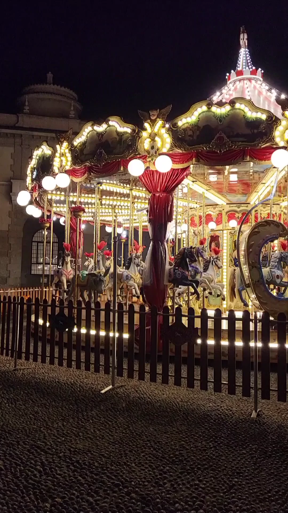

雪夜旋木Winter carousel · Magical Vintage Carousel at Night
真实旋转木马录像。视频经尺寸调整、压缩与离线光流插帧，制作连续慢动作，并将首尾短交叉溶解后静音循环；静态背景为视频抽帧。飘雪是独立网页效果。
Real carousel footage, played slowly and without sound. Files are resized, compressed and interpolated offline for smooth slow motion, with a short cross-dissolve at the loop seam; the poster is a frame from the video. Falling snow is a separate web effect.
carousel.mp4 · carousel.webp